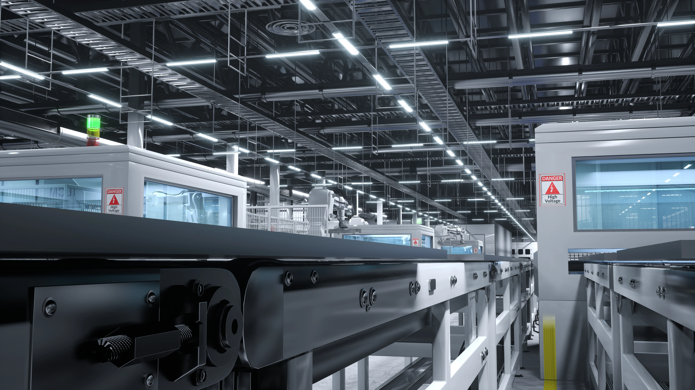

Conectamos sua empresa às melhores soluções do mercado.
A Girasul representa fabricantes de referência em soluções industriais: eletromecânicos, PRFV, iluminação e ventilação natural, polipropileno e engenharia & inspeção.
- Representação técnica de fabricantes nacionais líderes
- Atendimento consultivo — do projeto à entrega
- Atuação em todo o Brasil, com base no Paraná

Portfólio
Soluções que representamos
Cada linha foi escolhida por critério técnico e histórico de qualidade comprovado no mercado industrial.
Eletromecânicos
Estruturas, bandejas, eletrocalhas e sistemas de fixação para instalações industriais.
Estruturas em PRFV
Perfis, grades, escadas e passarelas em Plástico Reforçado com Fibra de Vidro.
Engenharia e Inspeção
Serviços técnicos especializados em segurança de máquinas e equipamentos industriais.
Iluminação e Ventilação Natural
Sistemas passivos para galpões industriais, logísticos e comerciais.
Iluminação LED
Luminárias industriais de alta eficiência energética para ambientes produtivos.
Produtos em Polipropileno
Tubulações e conexões termoplásticas em polipropileno para aplicações industriais.
Tubulações e Sistemas — Vetro
Soluções em polipropileno e PRFV para saneamento e infraestrutura hídrica.

Sobre a Girasul
Experiência e confiança em soluções industriais.
Desde 1991, a Girasul Representações atua conectando empresas, construtoras e operações de infraestrutura a fabricantes de soluções de alta performance. Nossa trajetória é marcada pela busca contínua por excelência e parcerias duradouras.
Experiência Comprovada
Mais de 30 anos de atuação no mercado, com profundo conhecimento técnico e histórico de sucesso em projetos complexos.
Portfólio Selecionado
Representamos apenas fabricantes líderes, garantindo acesso às melhores tecnologias e produtos do mercado.
Atendimento Consultivo
Do diagnóstico à indicação técnica, oferecemos suporte completo para otimizar a eficiência e segurança da sua operação.
Parceria Estratégica
Vamos além da venda, buscando construir relações de longo prazo com clientes e representadas, focadas em resultados.
Diferenciais
Por que escolher a Girasul?
Nossa experiência e compromisso com a excelência garantem as melhores soluções e o suporte que sua empresa precisa.
Atendimento Consultivo
Vamos além da venda, oferecendo suporte técnico e consultoria para identificar a solução ideal para sua necessidade.
Fabricantes Líderes
Representamos marcas de referência, garantindo acesso a produtos e tecnologias de ponta no mercado.
Logística Otimizada
Trabalhamos para garantir que sua solução chegue no prazo e com a qualidade esperada, do pedido à entrega.
Pós-Venda Atencioso
Nosso compromisso continua após a entrega, com suporte e acompanhamento para garantir sua satisfação.
Vamos falar sobre as necessidades da sua planta?
Conte rapidamente o que você precisa e vamos indicar a melhor solução entre os fabricantes que representamos.